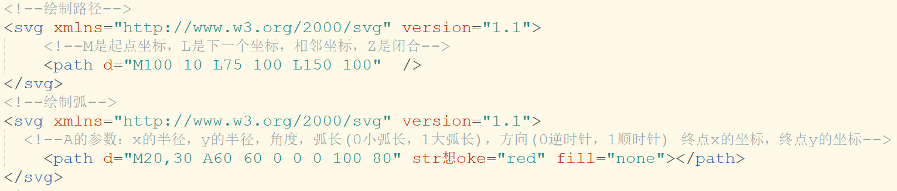

一、canvas
canvas 画布，位图
<canvas> 标签定义图形，比如图表和其他图像，您必须使用脚本来绘制图形
注意：不要在style中给canvas设置宽高，会有位移差
canvas的使用：
先获取canvas
var c=document.getElementById("c1")
获取之后，需要给canvas设置一个绘图环境
var can=c.getContext("2d")
绘制方块：
fillrect(x,y,w,h) 绘制一个填充的方格,默认颜色是黑色，
前两个参数是坐标（x轴和y轴），后两个参数是宽高
strokeRect(x,y,w,h) 绘制带边框的方块；
设置绘图
fillStyle:填充颜色（绘制canvas是有顺序的）
lineWidth：线宽度，是一个数值
strokeStyle：边线颜色
注意填充(fillrect)和画线(strokeRect)的区别。
先画线后填充。那么填充覆盖画线，线框的宽度就会缩小一倍
先填充后画线。那么画线覆盖填充，方块的宽度就会缩小一倍
边界的绘制
beginPath:开始绘制路径
closePath：结束绘制路径
moveTo：移动到绘制的新目标点
lineTo：新的目标点
每个线条只能有一个moveTo()可以有多个lineTo()
绘制路径
stroke:画线，默认黑色
fill：填充 默认黑色
rect：矩形区域
clearRect：删除一个画布的矩形区域
save：保存路径
restore：回复路径
清除画布：
clearRect(x,y,w,h) 清除画布
前两个参数是坐标（x轴和y轴），后两个参数是宽高
绘制圆形：
arc(x,y,半径，起始弧度，结束弧度，旋转方向)
x，y是圆心的坐标
turn是逆时针，是从钟表3点的那个点开始旋转的
逆时针为-，顺时针为+
插入字体：
fillText("内容",x,y) 在 canvas 上绘制实心的文本，xy是坐标
strokeText("内容",x,y)在 canvas 上绘制空心的文本
textAlign="center" 居中 也就是将xy坐标与字体的中心居中
画布的平移和旋转
translate(x,y) 平移
画布的大小位置不变，是画布的起始位置变了，
也就是说，是将画布的坐标平移了，原来的起始点(0,0)点，变成了你平移的位置加上-，
起始点就是平移的位置
但是作图的地方还是原来的大小
rotate() 旋转
属性是角度，
旋转都是以画布的起始点(0,0)旋转
scale(0.5,0.5) 缩放
画布的缩放，其实就是讲画布向后移动，跟人的视距就变远了，近大远小
二、svg
svg 矢量图
svg绘制矢量图，canvas绘制位图的
svg使用xml格式绘制图形的
svg要有一个根节点，叫svg标签，就相等于html
里面的xmlns是命名空间，version是版本
如果不设置大小，默认占用大小为300x150
定义矩形
rect标签
属性有：width，height，x,y,rx,ry,fill,stroke-width,stroke style
stroke-width:线条宽度 stroke：线条颜色
x 属性定义矩形的左侧位置
y 属性定义矩形的顶端位置
style="fill-opacity:0.2；stroke-opacity:0.5;opacity:0.5"
fill-opacity和opacity的区别：
fill-opacity只改变填充色的透明度 ，opacity改变fill和stroke的透明度都改变
定义圆：circle
circle
cx：圆的x轴坐标
cy：圆的y轴坐标
r：圆的半径
定义椭圆：ellipse
ellipse
CX属性定义的椭圆中心的x坐标
CY属性定义的椭圆中心的y坐标
RX属性定义的水平半径
RY属性定义的垂直半径
定义直线：line
line
x1 属性在 x 轴定义线条的开始
y1 属性在 y 轴定义线条的开始
x2 属性在 x 轴定义线条的结束
y2 属性在 y 轴定义线条的结束
必须结合stroke绘制
定义折线：polyline
polyline
属性是points，折线点的坐标
定义路径：path
path，有个d属性
d="定义路径指令"
M = moveto 起点坐标，开始点
L = lineto 相邻坐标，下一个点
H = horizontal lineto H代表水平画线，默认Y轴上的值一样
V = vertical lineto V代表水平画线，默认X轴上的值一样
A = elliptical Arc 用于画曲线的
以上所有命令均允许小写字母。大写表示绝对定位，小写表示相对定位(相对于上一个点)。

transform：转换，
平移，旋转都是以起点((0,0)svg的左上角)点为参考点，而css中以元素的中心点为参考点
组合 g
g用于将 相关元素进行组合
g身上的属性，子元素都会继承，但是g上的属性都必须是显现属性，不是svg元素私有的，
比如g上的圆心坐标就不行
定义文本：text
x坐标，y坐标，
xy的值在字体的左下角
文字居中处理：text-anchor:middle;
图片：image
x，y是坐标，xlink：href="图片所在的路径"
克隆：use
x，y是相对于原始的元素的坐标位置，不是相对svg的(0,0)点的坐标
x="克隆元素的左上角的x轴"
y="克隆元素的左上角的y轴"
width="克隆元素的宽度"
height="克隆元素的高度"
xlink:href="URI引用克隆元素"
动画：animate
这个标签是你放在哪个标签里就是哪个动
注意：
写在需要动画元素的中间
attributeName="目标属性名称"
from="起始值"
to="结束值"
dur="持续时间"
repeatCount="动画时间将发生"，indefinite：无限次
三、canvas与svg的区别
1、svg绘制出来的每一个图形的元素都是独立的DOM节点，能够方便的绑定事件或用来修改。canvas输出的是一整幅画布；
2、svg输出的图形是矢量图形，后期可以修改参数来自由放大缩小，不会是真和锯齿。而canvas输出标量画布，就像一张图片一样，放大会失真或者锯齿